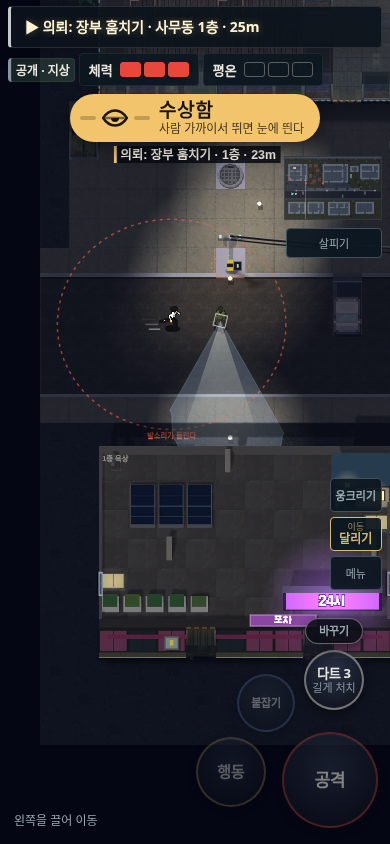
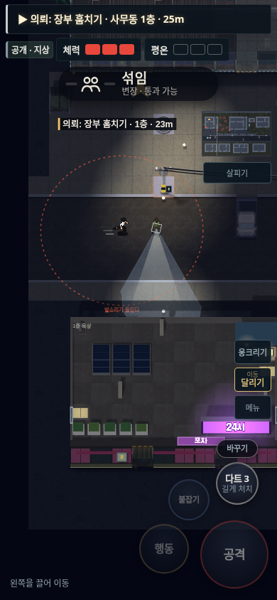
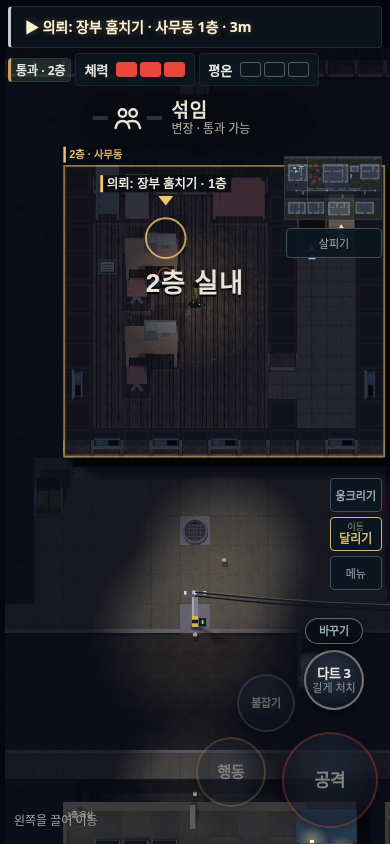
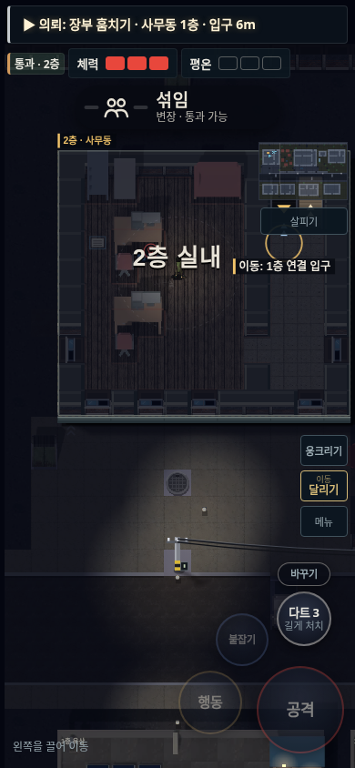
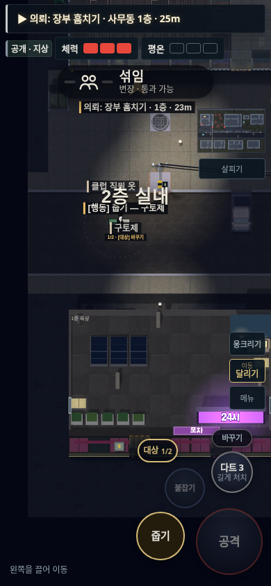
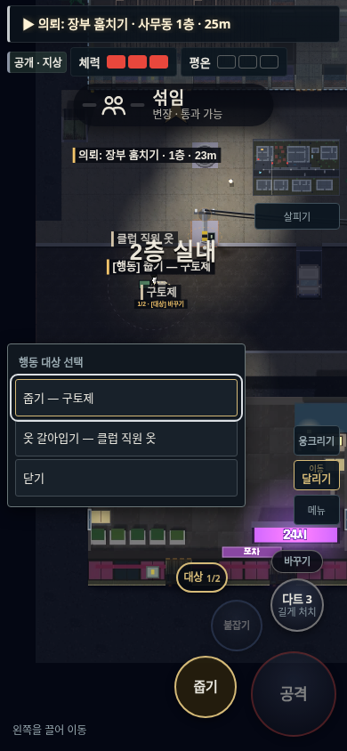
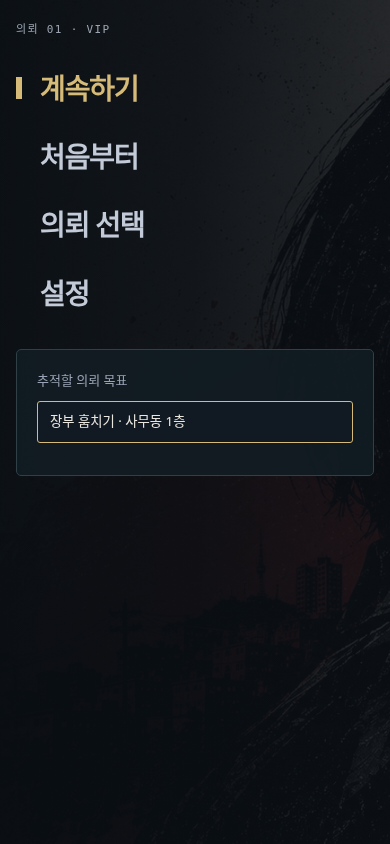

야행 v94 · 변장, 행동 선택, 층 안내
기존 버튼 위치와 중앙 섞임 표시, 오른쪽 미니맵을 유지하면서 판정과 안내를 맞췄습니다. VIP는 실제 음용 뒤 화장실로 이동하며, 관찰한 위치와 알려진 활동 구역을 구별합니다.
정상 변장과 위험 안내
허가된 신분으로 달릴 때 AI는 의심하지 않는데 안내만 수상함으로 바뀌던 부분을 맞췄습니다.
v93 · 정상 변장에도 수상함
v94 · 실제 판정에 맞게 섞임
다른 층 목표와 실제 연결 입구
현재 층의 벽 단면과 바닥 두께를 보강했습니다. 회수품이 다른 층에 있으면 실제 연결 입구를 가리키고, 상단 거리도 입구까지의 거리로 구별합니다.
v93 · 2층에서 아래층 목표의 평면 위치 표시
v94 · 벽 단면과 1층 연결 입구 안내
이름을 보고 고르는 행동 대상
기존 대상 버튼을 눌러 실제 행동 이름을 펼칩니다. 선택은 실행과 분리했고, 고른 대상이 없어지면 다른 물건을 대신 조작하지 않습니다.
v93 · 번호를 바꾸며 다른 행동 확인
v94 · 줍기와 옷 갈아입기를 직접 선택
선택한 의뢰 목표 유지
메뉴에서 추적할 의뢰 목표를 고릅니다. 이동만으로 가까운 다른 목표로 바뀌지 않습니다. 기회 추적과 전체 안내 설정은 계속 사용할 수 있습니다.

비교 이미지는 같은 좌표·화면 크기의 통제된 장면입니다. 행동 목록 비교에서는 구토제와 직원 옷을 가까이 배치했습니다. 실제 플레이 시간이나 난이도 평가는 별도이며, NPC를 움직이는 VIP 장면 검사와 전체 경로 검사를 구분해 수행했습니다.